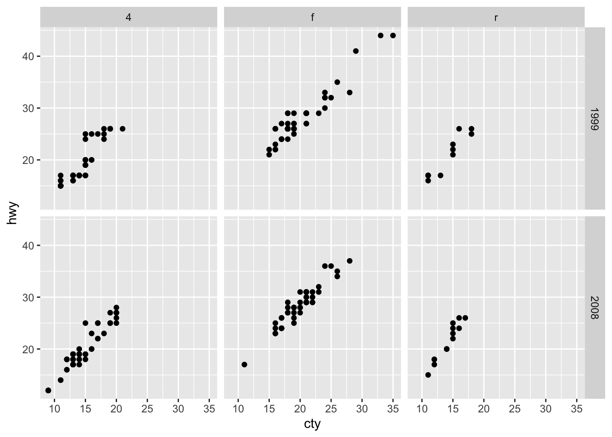
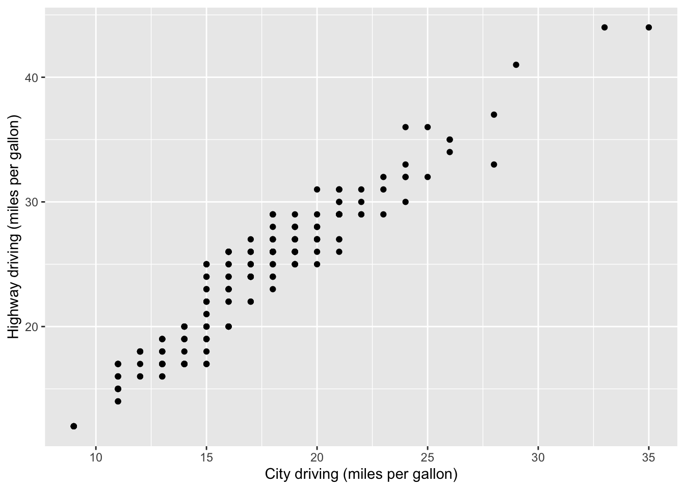
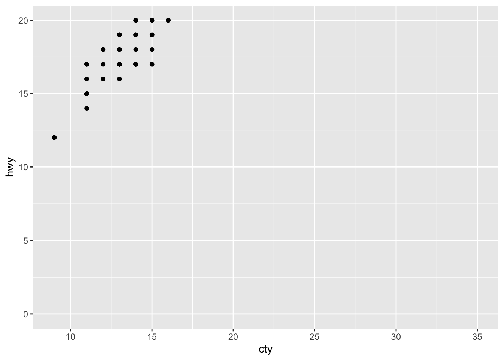
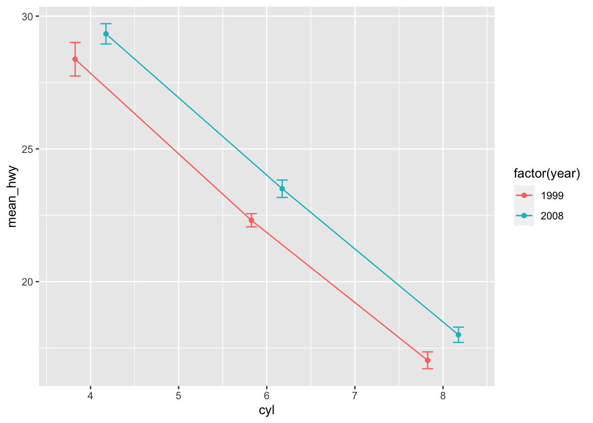
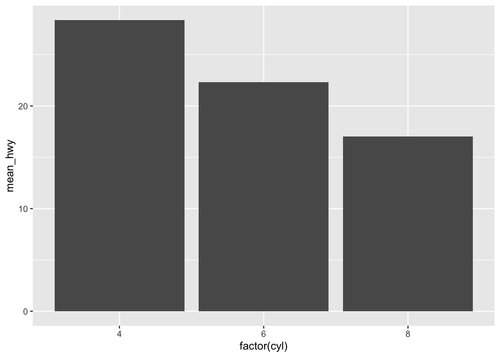

ggplot2
ggplot2 is an R package for producing statistical graphics based on the grammar of graphics (hence the gg!).
- ggplot2 works iteratively – you start with a layer showing the raw data and then add layers of geoms, annotations, and statistical summaries.
To compose plots, you have to supply minimally:
- Data that you want to visualise and aesthetic mappings – what’s on x-axis, what’s on y-axis, and how to you want to group and color your data.
- Layers made up of geometric elements: points, lines, boxes, etc.
You can further adjust your plot:
- by adding statistical summaries of your raw data.
- using scales to redraw a legend or axes.
- using faceting to break up the data into subsets for display.
- using themes which control plot features like the font size and background colour.
ggplot2 is different from base graphics:
- Plots created by base graphics appear only on the screen and you cannot assign plot to an object for later use. Everything is created in place.
- You can only draw on top of the plot, you cannot modify or delete existing content.
That was theory, you can read more from ggplot2-book, this is where rubber meets the road:
library(ggplot2) # load ggplot2 library
library(dplyr) # dplyr is necessary for piping operator and for some data munging
library(tidyr)We use ggplot2 builtin dataset mpg with fuel economy data from 1999 and 2008 for 38 models of car:
mpg## # A tibble: 234 x 11
## manufacturer model displ year cyl trans drv cty hwy
## <chr> <chr> <dbl> <int> <int> <chr> <chr> <int> <int>
## 1 audi a4 1.8 1999 4 auto(l5) f 18 29
## 2 audi a4 1.8 1999 4 manual(m5) f 21 29
## 3 audi a4 2.0 2008 4 manual(m6) f 20 31
## 4 audi a4 2.0 2008 4 auto(av) f 21 30
## 5 audi a4 2.8 1999 6 auto(l5) f 16 26
## 6 audi a4 2.8 1999 6 manual(m5) f 18 26
## 7 audi a4 3.1 2008 6 auto(av) f 18 27
## 8 audi a4 quattro 1.8 1999 4 manual(m5) 4 18 26
## 9 audi a4 quattro 1.8 1999 4 auto(l5) 4 16 25
## 10 audi a4 quattro 2.0 2008 4 manual(m6) 4 20 28
## # ... with 224 more rows, and 2 more variables: fl <chr>, class <chr>Key variables in mpg dataset are displ – engine displacement (L), cyl – number of cylinders, cty – city miles per gallon, hwy – highway miles per gallon.
Simple scatterplot to explore relationship between fuel consumption in city traffick (cty) and engine size (displ) is created like this:
ggplot(mpg, aes(displ, cty)) + geom_point()Notice that: in ggplot first two unnamed arguments to aes() are x and y, so we can easily skip x = and y = to reduce typing.
Scatterplot
To illustrate layerwise plot creation in ggplot:
p <- ggplot(data = mpg) # first add data
p <- p + aes(x = cty, y = hwy) # add aesthetics
p <- p + geom_point() # add geom, specifying plot type
p + stat_smooth(method = "lm") # add statistical summary The point geom is used to create scatterplots.
The point geom is used to create scatterplots.
Of course, this result is usually achieved by this oneliner:
ggplot(mpg, aes(cty, hwy)) + geom_point() + stat_smooth(method = "lm")Color, size, shape, and fill
Other aesthetics like color, shape, fill, and size can be used to add additional variables to a plot:
ggplot(mpg, aes(cty, hwy, color = drv)) + geom_point() # 'colour=' can be used too
Point shape codes
While colors and sizes are intuitive, it seems impossible to remember available point shape codes in R. The quickest way out of this is to know how to generate an example plot of the shapes quickly. This is how to do this in ggplot2.
ggplot(data=data.frame(x=c(0:25))) + geom_point(size=8, aes(x=x,y=x,shape=x)) +
facet_wrap(~ x, scales='free') + xlab('') + ylab('') +
scale_shape_identity() +
theme(axis.text.x=element_blank(), axis.text.y=element_blank(),
axis.ticks=element_blank(), legend.position='none',
panel.background=element_blank(),
panel.grid.major=element_blank(),
panel.border=element_blank())
Facetting
Another possibility to add more variables is to use facet_wrap:
ggplot(mpg, aes(cty, hwy)) +
geom_point() +
facet_wrap( ~ drv) # to specify name of a variable preceded by ̃
Two-way table can be created using facet_grid command:
ggplot(mpg, aes(cty, hwy)) +
geom_point() +
facet_grid(year ~ drv) # to specify row variable ̃column variable
Modify axes, start y or x axis at zero
Axis labels can be changed using xlab() and ylab():
p + xlab("City driving (miles per gallon)") + # to set x axis label
ylab("Highway driving (miles per gallon)") # to set y axis label
The other way around, to remove axis leables, set them to NULL:
p + xlab(NULL) + ylab(NULL)
In many cases proper visual representation of data requires that e.g. y axis starts from zero. By default, ggplot zooms only into region where data is located and 0 is dropped from axes. To change this behaviour, ggplot has command expand_limits() specifying the value(-s) that should be included in each scale:
p + expand_limits(x = 0, y = 0) # upper and lower axis limits can be specified by supplying vector of two values
scale_x_continuous() and scale_y_continuous() have argument limits, which can be used to set axis limits, but values remaining outside limits will be set to NA:
p + scale_y_continuous(limits = c(0, 20))## Warning: Removed 145 rows containing missing values (geom_point). Note the warning!
More simply, we can use xlim() and ylim():
p + xlim(15, 20) + ylim(0, 30)## Warning: Removed 119 rows containing missing values (geom_point).
ggsave plot
ggsave recognises .eps/ps, .tex (pictex), .pdf, .jpeg, .tiff, .png, .bmp, .svg, and .wmf (windows only) file extensions. To save a plot p to e.g. as .png file use:
ggsave("graphs/my_biutiful_plot.png", plot = p, width = 7, height = 5)By default plot= is the last plot.
Histograms
Differently from base R graphics, where histogram is drawn by a special command, ggplot specifies the type of plot by geoms, like geom_histogram():
df <- tibble(x = rnorm(10000)) # For demo we create tibble with 10000 random numbers from normal distribution
ggplot(df, aes(x)) + geom_histogram() # to plot histogram we specify geom_histogram ## `stat_bin()` using `bins = 30`. Pick better value with `binwidth`.
ggplot says: stat_bin() using bins = 30. Pick better value with binwidth, also help file notes that ‘the default is to use bins bins that cover the range of the data. You should always override this value, exploring multiple widths to find the best to illustrate the stories in your data’. OK, Messy Goes to Okido, lets try:
ggplot(df, aes(x)) + geom_histogram(binwidth = 0.1) # for better granularity, we specify binwith = 0.1
Alternatively, you can specify the number of bins (and perhaps send some hidden messages along with your visualisation):
ggplot(df, aes(x)) + geom_histogram(bins = 5) # if we want to split data into eg. 5 bins
For some more practice, lets recreate Tartu Marathon 2013 histogram:
library(lubridate)
load("data/Tartu_Maraton_2013.RData")tm <- tm_2013 %>% mutate(Aeg = unclass(as.duration(hms(Aeg)))/3600) %>% filter(complete.cases(.))
tm %>% ggplot(aes(Aeg)) + geom_histogram(binwidth = 1/12) # we want binwidth ~5 minutes (1/12 hour)
These were histograms with counts on y-axis, but we may want to plot (kernel) density instead, for this we use geom_density():
ggplot(df, aes(x)) + geom_density()
Histogram with densities on y-axis:
ggplot(df, aes(x, ..density..)) + geom_histogram()## `stat_bin()` using `bins = 30`. Pick better value with `binwidth`.
Kernel density plot and histogram together:
ggplot(df, aes(x, ..density..)) +
geom_histogram(binwidth = 0.1) +
geom_density()
p <- ggplot(df, aes(x)) +
geom_histogram(aes(y = ..density..), # note that we specify density here,
binwidth = 0.1,
fill = "white", color = "black") +
geom_density()
p # we disrected plot to object
We can add vertical line, denoting mean, to our histogram like this:
p + geom_vline(aes(xintercept = mean(x)), color = "red", linetype = "dashed", size = 1) 
To compare distributions we can overlay histograms and density plots. To demonstrate this, let’s create dummy dataset of two normal distributions:
df2 <- tibble(pop = rep(c("N", "S"), each = 1000),
value = c(rnorm(1000, 20, 3), rnorm(1000, 25, 3)))
df2## # A tibble: 2,000 x 2
## pop value
## <chr> <dbl>
## 1 N 19.38517
## 2 N 21.19356
## 3 N 18.02291
## 4 N 16.54664
## 5 N 23.36140
## 6 N 12.47474
## 7 N 19.66393
## 8 N 19.95718
## 9 N 19.99606
## 10 N 21.00648
## # ... with 1,990 more rowsWhen overlaying histograms in ggplot, default action is to ‘stack’ them one to another, making comparison difficult. We have to specify position = "identity" to place them directly onto x-axis (each bar starts from y = 0). Also we specify alpha = for some transparency:
p1 <- df2 %>% ggplot(aes(value, fill = pop))
p1 + geom_histogram(position = "identity", alpha = 0.7, binwidth = 0.3)
Alternatively, it’s possible to place comparable bars next to each other by specifying position = "dodge":
p1 + geom_histogram(position = "dodge", binwidth = 1)
Overlaid kernel density plots:
p2 <- p1 + geom_density(alpha = 0.7)
p2
To indicate means for these two distributions, we have to calculate means into a new data frame:
df2_stats <- df2 %>% group_by(pop) %>% summarise(pop_mean = mean(value))
p2 + geom_vline(data = df2_stats, aes(xintercept = pop_mean, color = pop), linetype = "dashed", size = 1)
Boxplots
Boxplots are created using geom_boxplot:
df2 %>% ggplot(aes(pop, value)) + geom_boxplot()
p3 <- df2 %>% ggplot(aes(pop, value, fill = pop)) + geom_boxplot()
p3
Often, it’s a good idea to overlay original values to plot. Specially, if there is only few values. Let’s add original data points to previous boxplot:
p3 + geom_point() Adding geom_points was not very helpful in this case. s We can try to jitter these points, where argument
Adding geom_points was not very helpful in this case. s We can try to jitter these points, where argument width= specifies jitter width (default full boxplot width):
p3 + geom_jitter(width = 0.5)
As shown previously, we can also add summary data (mean) to this plot (large red dots):
p3 + geom_point(data = df2_stats, aes(y = pop_mean), shape = 16, color = "red", size = 3)
Plotting means and error bars
Summaries and e.g. errorbars can also be calculated on the fly. To illustrate this, we take first smaller sample from our dataset in order to have larger errorbars. Here we add bootstrapped 99% confidence intervals of the mean:
p4 <- df2 %>% sample_n(50) %>% # to have larger error
ggplot(aes(pop, value, fill = pop)) + geom_jitter(color = "gray", width = 1/3)
p4 + stat_summary(fun.data = "mean_cl_boot", fun.args = list(conf.int = .99), geom = "pointrange") # poinrange is default geom 
Here we add errorbars, denoting standard error of the mean:
p4 <- p4 + stat_summary(fun.y = mean, geom = "point", shape = 95, color = "red", size = 15) + # mean
stat_summary(fun.data = mean_se, geom = "errorbar", width = 0.25) # standard deviation
p4
Linegraphs
Now we create line graphs with errorbars, we use mpg data. We calculate mean and standard error of the mean for highway fuel consumption (hwy) per year and per number of cylinders:
mpg_sum <- mpg %>%
filter(cyl %in% c(4,6,8)) %>% # to include only comparable values
group_by(year, cyl) %>% # to compare two years
summarise(mean_hwy = mean(hwy), # to calculate mean
N = n(), # N to calculate standard error
se_hwy = sd(cty)/sqrt(N)) # standard error
mpg_sum## # A tibble: 6 x 5
## # Groups: year [?]
## year cyl mean_hwy N se_hwy
## <int> <int> <dbl> <int> <dbl>
## 1 1999 4 28.37778 45 0.6324200
## 2 1999 6 22.31111 45 0.2490386
## 3 1999 8 17.03704 27 0.3172771
## 4 2008 4 29.33333 36 0.3823717
## 5 2008 6 23.50000 34 0.3273554
## 6 2008 8 18.00000 43 0.2873450geom_line() is used to create linegraphs in ggplot. We want two distinct colors for year variable, therefore we coerce year to factor:
p5 <- mpg_sum %>% ggplot(aes(cyl, mean_hwy, color = factor(year)))
p5 + geom_point() + geom_line()
Errorbars can be added by using geom_errorbar, which needs arguments ymin and ymax:
p5 + geom_point() + geom_line() +
geom_errorbar(aes(ymin = mean_hwy + se_hwy, ymax = mean_hwy - se_hwy), width = 0.25)
When the errorbars overlap, use position_dodge to move them horizontally.
pd <- position_dodge(0.7) # move them p5 + geom_point(position = pd) +
geom_line(position = pd) +
geom_errorbar(aes(ymin = mean_hwy + se_hwy, ymax = mean_hwy - se_hwy),
width = 0.25,
position = pd)
Bargraphs
Bargraphs are created using geom_bar and default stat counts needs to changed to identity:
p6 <- mpg_sum %>% filter(year == 1999) %>%
ggplot(aes(factor(cyl), mean_hwy))
p6 + geom_bar(stat = "identity") Note that bargraph starts at 0.
When adding additional variables to a bargraphs e.g. via fill = you need also unstack the bars by specifying position = position_dodge():
pd <- position_dodge(0.9)
p6 <- mpg_sum %>% ggplot(aes(factor(cyl), mean_hwy, fill = factor(year)))
p7 <- p6 + geom_bar(stat = "identity", position = pd)
p7
p7 + geom_errorbar(aes(ymin = mean_hwy - se_hwy, ymax = mean_hwy + se_hwy),
position = pd, width = 0.25)